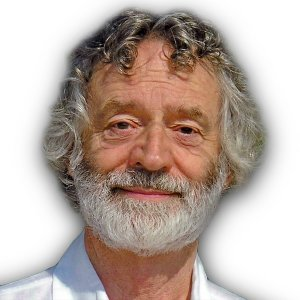

Andrew Allison
A certified teacher of the Dong Yingjie Legacy, i.e., classical Yang-style, Taiji School, Andrew has studied the art since the early 1980s, initially under Master Wu Ta-Yeh at the Taijiquan Tutelage of Palo Alto and under Master Alex Dong since 1994. He shares Alex's belief in the importance of maintaining the traditional style handed down through four generations of the Dong (Tung) family. Andrew teaches classes at the Carmel Foundation in Carmel, Del Mesa Carmel and assists at the Jing Chi Shen school in Carmel Valley.
Del Mesa Carmel, Carmel Valley
Beginning Tai Chi Wednesday 9:00-10:30am
Phone: 831-626-4361
Email (preferred): allison.aa@gmail.com
Carmel Valley Athletic Club
Tuesdays and Thursdays: 5:00-6:00 pm
Advanced/Intermediate
Wednesdays: 4:30-5:30 pm
Email: temasuda@hotmail.com